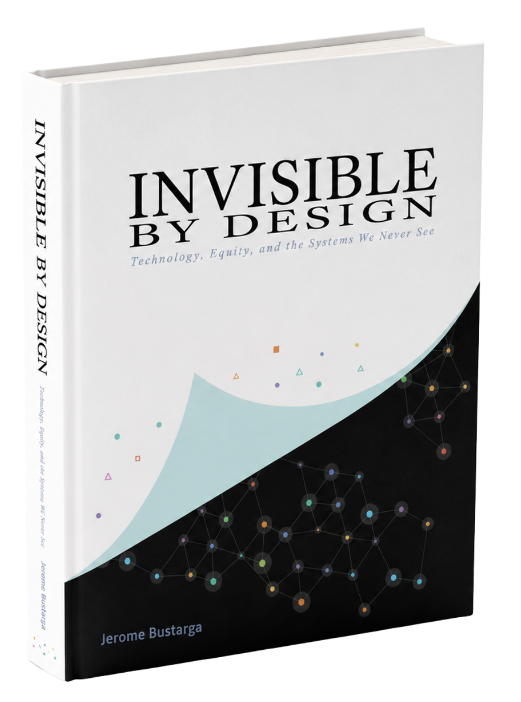

Invisibleby Design
A coffee-table book about the algorithmic systems we've stopped seeing — and the people they leave behind.

Invisible by Design documents the making of The Algorithm Mirror — a privacy-first web tool I built that turns a person's YouTube watch history into visual data art. The book turns that tool into an argument: the same systems that quietly narrow your feed also widen the gap between people who understand how those systems work and people who never knew they existed.
Across 28 pages it moves from a personal story — growing up in the Philippines, watching the digital divide split a classroom during the pandemic — to original research on twelve participants and 82,164 videos, and finally to a case for algorithmic literacy as a civil-rights issue.
The design problem was making something invisible feel concrete. Rather than reach for stock metaphors — magnifying glasses, padlocks, glowing eyes — I built the book's entire visual language out of the same material the tool itself produces: particle fields, pixel grids, and network meshes, each one generated from data.
The pilot study, in numbers.
// 12 participants · 2 years of historytwelve participants
top three categories
10 pm and 2 am
User A (18 months)
tool supports
"Algorithmic literacy shouldn't be a privilege. It should be a right.— from the book
The Compounding Gap
Cover, opening portrait, and the personal story — where the visual system and the argument are introduced together.


"The algorithm isn't malicious. It's optimized.— Chapter One
Building the Mirror
The tool itself, the research findings, and the data visualizations that carry the book's evidence.


We just have to build it.— Looking Forward
And share it. And teach it.
What Comes Next
The call to action and the closing image — the book hands the mirror to the reader.


Data as material
Nothing in the book is decorative. Every particle field, pixel grid, and mesh is generated from real or simulated watch-history data, so the visuals are the same kind of object the tool produces — not illustrations of it.
No stock metaphors
The brief deliberately avoids the visual clichés of surveillance design — no padlocks, no all-seeing eyes used as scare imagery, no magnifying glasses. The one eye in the book is a quiet imprint mark, not a threat.
Editorial typography
Space Grotesk sets the display voice, Inter carries long-form reading, and JetBrains Mono labels every data point and caption — a three-way system that keeps research, narrative, and interface legible side by side.